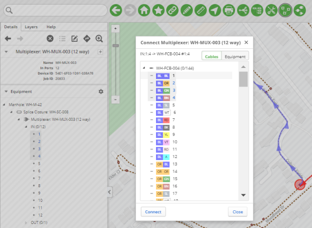
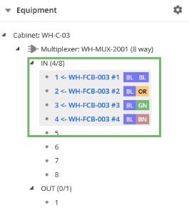
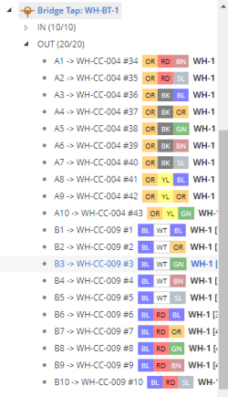

To connect a cable to a piece of equipment:
In the Equipment tree, expand the equipment to which you would like to connect the cable.
All incoming (IN) and outgoing (OUT) ports for the equipment are listed.
Select one or more IN or OUT ports that you want to connect. To select multiple ports, press the Shift key and then click the required ports.
Right-click the selected ports, and then click Connect.
The Port Connection dialog appears
Select the Cables tab.
Expand the tree node of the cable you want to connect to.
The list of strands is displayed.

Figure: Connecting a cable to equipment
Notes:
To view the upstream and downstream terminations of a strand or a set of strands, use the Show Terminations context menu option. For more information, see Showing terminations.
Select the required strands, and then click Connect.
The equipment is connected to the cable or port. The new connections are shown in the Equipment tree.
The following example shows incoming connections from the cable WH-FCB-003 to the IN ports on Multiplexer: WH-MUX-2001.

Figure: Equipment connections
The connections are also shown in the Cables tree.

Figure: OUT ports of a bridge tap